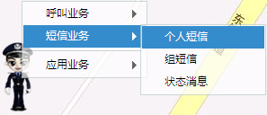
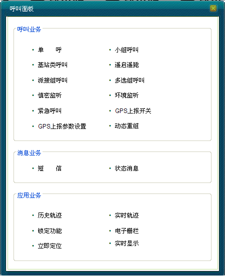
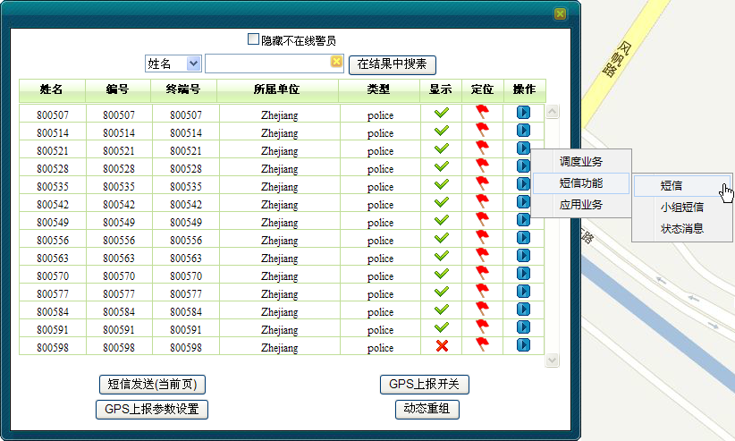

只有调度用户具有短信业务的权限。在进行短信业务操作之前，首先要确认调度用户成功登陆GIS系统。
在GIS系统中，用户可通过以下几种方法进行GIS的短信业务操作。
方式一：
调度用户可以通过在地图上选中移动用户，右键选择短信业务，如下图1所示。

图1. 地图右键选择短信业务
方式二：
调度员也可通过操作菜单栏上的［调度功能/呼叫面板］，在呼叫面板上选择相应的消息业务，如下图2所示。

图2. 呼叫面板选择消息业务
方式三：
在消息日志中，调度员可左键组用户号码，在弹出的菜单中选择“短信”，发送组短信信息。
在消息日志中，调度员也可左键个人用户号码，在弹出的菜单中选择各种短信业务。详细参见“日志功能”一节。
方式四：
调度员还可通过框选用户，对框选范围内的所有用户进行群发短信，或者对“选中用户列表”中的某一用户进行各种短信业务，如图3所示。

图3. 框选用户选择短信业务
方式五：
在成员树中，调度员可以对个人用户或者组用户进行各自类型的短信业务。详细参见“成员树”一节。
 说明：
说明：
调度员可发送短信，也可接收短信。
eTRA GIS短信业务包括：
Copyright © 2012 Eastcom, Inc. All rights reserved. |
||